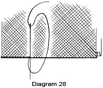

1950—How to Make Gloves
by Eunice Close
Section 4
Other Materials
I have seen some most attractive gloves in gingham and stockinette, and these can quite easily be made at home if you are prepared to go to a certain amount of trouble. The material you use must be very closely woven and must on no account be the sort of material that frays easily, as this forces you to make the seams very much wider than is wise. Gloves of this type can be made from pieces left over from a summer frock. If you have to buy new material you will need about half a yard for a pair of medium length pull-on style gloves. This may seem a lot but you must remember that the gloves have to be cut on the bias in order to give the maximum amount of stretch across the hand. To get the true bias of a piece of material fold up the selvedge edge so that it is either lying along or is parallel to the cut edge. Crease this fold, open out your material and lay the pattern on it so that the centre line running down the hand is parallel to the crease. Be very careful about this as gloves cut off the true bias will tend to wrinkle where they should fit smoothly. This method of cutting out is very successful when striped or checked materials are used. The checks form a diamond pattern and the stripes cross the hand diagonally. When making striped gloves in this way remember to reverse the pattern for the second hand so that the stripes go in opposite directions. If you want gloves with stripes going up and down the hand buy material which is woven or printed in diagonal stripes.
When cutting out the gloves allow turnings of one-eighth inch on all seams. Turn in the seam allowance round each section and press with a hot iron. This gives a better result than turning in the edge as you go along and pressing the glove afterwards. Baste the seams, then sew them either by hand or machine. Stab stitch or oversewing can be used if you prefer to work by hand. Gloves made from dress materials can be sewn on the wrong side if liked, as they are thin enough to be turned right side out when the sewing is done. If you make the seams by hand use backstitch and keep your stitches very small and neat. When the gloves are finished they can be pressed in the usual way with a hot iron.
A good finish for a glove of this kind is a pleated frill which can be stitched on at the wrist edge. A bias strip of the material can be used to finish off the edge, whether it is plain or pleated. Points can be as plain or as fancy as you like. Ordinary tucks can be used or the points can consist of three rows of chainstitch. Another good material for trimming is rickrack braid which can be obtained in a good range of colors as well as black and white. Three rows down the back of the glove and one, two or three rows round the wrist edge are quickly sewn on and look most attractive.
The effect to aim for in making gloves of this type is one of crisp smartness. Needless to say they must always be immaculately clean and well pressed. A trace of starch will keep them crisp and fresh-looking. Such gloves are usually only one season's wear but they do save better gloves and are much cooler than those made from leather.
Most nylon is easy to sew and does not fray easily, and it should answer quite well for gloves. It can be washed and dried very quickly and some types need no ironing, so it might be worth your while to experiment with this material.
Stockinette or lock knit in both silk and wool can be used for gloves, but being knitted and not woven it needs slightly different treatment. There is no need to cut it on the bias since it has a certain amount of stretch naturally. One drawback to using this material is that raw edges inside seams tend to roll up, thus making the seams thick and clumsy. One way to prevent this is to turn in each section along the seam edges and machine stitch as close to the edge as possible. Trim off the surplus material close up to the machine stitching, then make up the seams on the wrong side in the usual way. The seams may also be sewn on the right side by oversewing [together over the machine stitches. Be very careful not to stretch the material while the seams are being made.
Wool stockinette is usually thicker than the silk variety but may be treated in the same way. It usually has more of a tendency to run than the lock-knit variety but this can be prevented by paying careful attention to the seams. Stockinette of all kinds stretches sufficiently for you to be able to make the seams on the wrong side, but with the wool variety particularly care is needed in the pressing. The handle of a wooden spoon is a great help when turning out the fingers, and it can be held inside each finger in turn while the seams are being pressed. As a final touch, tuck the fourchette inside the fingers and press the gloves flat. Today a very popular fabric for gloves is double-woven cotton and double-woven nylon, with a sueded finish.
Evening Gloves in Net
As I mentioned above, long gloves seem to be coming back into fashion for evening wear. They are very expensive, however, and many people may feel that the cost is not justified by the amount of wear the gloves will get. For this reason you may like to experiment with net which has recently reappeared in the shops in several attractive colors as well as white.
There are one or two points which must be borne in mind when using this material. It does not stretch as much as suede and consequently the gloves must be made large enough to allow them to slip over the arm easily. The edges of the net have to be neatened and thus you must allow for the turnings when cutting out the gloves.
I have found that the best and easiest way of cutting out net gloves is to reverse the usual procedure and lay the net, carefully ironed and smoothed out, on top of the pattern. As the net is transparent you can follow the outline of the pattern quite easily. Use double fourchettes without quirks as this eliminates the seam at the base of each pair. When cutting the hole for the thumb remember that it must be a little smaller than usual to allow for the turnings, while the thumb must be a little larger for the same reason.
Turn in the edges of each section and press with a fairly hot iron. Baste the thumb into place, putting the wrong sides together and making sure that the folded edges are exactly level. Use ordinary sewing silk and buttonhole ]very closely over the edges as shown in Diagram 28. Another method which is effective, although it takes a little longer, is to buttonhole all round each section, being very careful not to stretch the edge, and then to oversew the sections together, taking the stitches through the top of the buttonhole stitches only. Yet another way, for those of you who are able to crochet, is to baste up the seams and then work double crochet all round each, putting your hook into both pieces of material each time.
Before completing the actual sewing up of the glove, work any trimming that may be required. This trimming may consist of rows of chainstitch, simple darning patterns, using the holes of the net as a guide, or small motifs cut from lace appliquéd on to the net. Sequins, scattered at intervals all over the glove, except on the palm, are very effective, particularly on black. A scroll design up the back only, also looks well.
A very attractive trimming, which must, however, be done after the glove is made up, is to sew on several rows of narrow lace, starting at the thumb and going spirally up the arm, ending at the top edge. When sewing on any kind of trimming in this way remember to reverse the direction of it for the second glove.
Make a slit in the front of the glove about three inches long, putting half of it above the wrist and half below. Bind as narrowly as possible with a strip of net and work four or five buttonhole loops as shown in Diagrams 26A and 26B. Press the binding and loops.
{kind=link}
Insert the fourchettes in the usual way, fold the glove in half and sew up the remainder of the seams. Finish off the top edge in a way which will harmonize with the type of trimming you have chosen. A pleated net frill, a simple binding or a hem can be used, and if it seems necessary a piece of tubular hat elastic can be inserted in the top of the glove. A tiny border in fancy crochet can be used, the first row being worked straight into the doubled-over net.
The pattern you use for making net gloves can be used quite easily for making a pair of mitts — the old-fashioned kind whose fingers end just below the second joint. These mitts are very attractive when worn with the picture type of evening dress or for a small bridesmaid.
Measure the pattern against the hand and cut each finger to the required length plus three-quarters inch for the top hem. Cut out the mitt in the usual way, cutting the double fourchettes shorter and straight across the top. Turn in the top of each section, then turn in the edges as described for the net gloves. This will do away with the necessity for neatening the top of the fingers as the hem will be held in place by the seams, although a decorative border, worked in crochet or buttonhole stitch, can be added if desired. Make up the mitts in the usual way, trimming them and finishing off the top edge in one of the ways suggested for the net gloves.
Working Gloves
There are several kinds of gloves which are made for some special purpose and if you can make ordinary gloves there is no reason why you should not make such working gloves, too. Most of them do not demand any great degree of skill in the making, and since a fault may pass unnoticed or, at least, not matter much, they make very good practice for the beginner.
Many women like to wear gloves while doing their chores, but it is not always a good plan to make use of ordinary gloves that have been discarded. These gloves are usually wearing out anyway and the extra strain they are put to when their wearers are cleaning grates and sweeping floors generally finishes them off entirely. It is better to make a special pair and if they are washable so much the better.
Ordinary material is not particularly suitable though it can be used if it is very closely woven. Looser weaves allow dirt and dust to seep through. Cheap quality chamois or "wash leather," as it is usually called, answers the purpose admirably. You can sometimes buy bundles of this fairly cheaply, and even if you have to have a few joins you will find that gloves made from it will give you a surprising amount of wear.
Use an ordinary glove pattern in a slightly larger size than you usually wear. Make it with fourchettes but no quirks. The gloves should be long enough to cover the wrist and should fit fairly closely so that dust and dirt cannot get in easily. Take care to make the seams really strong as such gloves get far harder wear than ordinary ones.
Gardening Gloves
 Many people who are keen gardeners dislike getting their hands stained and
scratched and prefer to wear gloves of some kind. For such jobs as pruning
rose trees and digging, gloves are essential, and if they can be made at
home so much the better for your purse. For really heavy work, fingerless
gloves with a thumb can be worn. Some gardeners, however, find that mittens
do not give them enough freedom of movement and they might like the sort
of gloves shown in Diagram 29. These have a thumb and a first finger, the
other three fingers not being separate. To make them, use an ordinary larger
size pattern but omit the two outer slits on each side. You will need only
one pair of fourchettes for each glove and these should be inserted in the
usual way up the side of the first finger and the section which will cover
the other three fingers.
Many people who are keen gardeners dislike getting their hands stained and
scratched and prefer to wear gloves of some kind. For such jobs as pruning
rose trees and digging, gloves are essential, and if they can be made at
home so much the better for your purse. For really heavy work, fingerless
gloves with a thumb can be worn. Some gardeners, however, find that mittens
do not give them enough freedom of movement and they might like the sort
of gloves shown in Diagram 29. These have a thumb and a first finger, the
other three fingers not being separate. To make them, use an ordinary larger
size pattern but omit the two outer slits on each side. You will need only
one pair of fourchettes for each glove and these should be inserted in the
usual way up the side of the first finger and the section which will cover
the other three fingers.
You will need very strong, tough leather although it must be fairly flexible. Sew it with string thread and a thick gloving needle. If you feel you would like to stitch it by machine make sure that your machine will sew really thick stuff and use a fairly large needle. Another method is to pierce holes with a sharp nail and then sew through these. When sewing these gloves by hand make the seams on the right side using stab stitch.
Sleeping Gloves
At one time it used to be possible to buy gloves impregnated with some kind of hand lotion and these were worn during the night. Many people find that even if they rub cream into their hands before going to bed it soon rubs off. This is especially the case where people suffer from chilblains and like to rub some kind of ointment into their fingers that may stain the bedclothes. For both purposes a pair of soft gloves will be found to be of great help. A couple of pairs, daintily finished, would make a delightful Christmas present.
The material you choose for gloves of this kind should be soft and warm. A woolen finished material such as flannel is excellent for the purpose as it does not chill the hands when it is put on, though I have seen good gloves made from the best parts of an old twill sheet. They combined warmth with softness, ease of washing and durability.
There is no need to use an elaborate pattern for these gloves. Fourchettes can be dispensed with, provided the fingers are made wide enough, though a diamond shape gusset at the base of each finger can be used to give a little extra room. Diagram 30 shows how this is put in.
Make single seams on the wrong side, either by machine or by hand. In the latter case the seams should be backstitched. Turn the gloves right side out and bind the wrist edge with a piece of bias binding in a contrasting color. Embroider a spray of flowers or an initial in a shade to match the binding and press the gloves well.
Gloves made for this purpose must not be the least bit tight, especially if the wearer suffers from chilblains, but as they are apt to slip off during the night if they are not secured in some way, it is wise to insert a piece of elastic right across the front section. This should be tight enough to keep the glove on bur loose enough for the wearer not to be conscious of it.
Children's Gloves
Children's gloves are very expensive to buy, but even in these days most mothers like their children to have one pair of kid gloves "for best." If they can be made at home they will cost a good deal less than if they were bought in a shop. They can be made from fairly small pieces of leather, and often a skin which is not large enough for two full-sized pairs of gloves will leave enough over to make a pair for a child. Thin leathers such as kid should be used for children's gloves. Suede and other fancy leathers are not suitable. Patterns, too, should be extremely simple with machine-stitched points, no gauntlets and a one stud fastening.
Fingerless mittens are best for small children as they have great difficulty in finding the right finger, especially when the gloves are lined. Fur-backed gloves and those made from sheepskin should always be made without fingers. Those with a zip across the hand delight small boys, while fur-backed gloves, "just like Mummy's," will please their sisters. Gaily embroidered felt mittens are a good investment for children especially if they are worn over a pair of thin knitted ones.
It may be thought that since gloves for children are smaller than those worn by adults they will be less trouble to make, but I must warn you that this is not always so. Of course, the seams are a little shorter but the pieces from which the glove is made being smaller they are usually more fussy to put together.
Knitted gloves are usually considered the most suitable for toddlers and babies who are still at the pram stage, though some mothers like to dress their offspring in white fur-backed mittens with no thumb or fingers. The palms should be made from white kid. If this is not obtainable doeskin can be used as a substitute.
Caring for Your Gloves
When you have spent a lot of time making a pair of gloves you will not want to spoil them by not caring for them properly. Leather, suede or chamois gloves should never in any circumstances be rolled together in a ball. This creases them and stretches them in the wrong place. Nor should they be thrown anyhow into a drawer to lie tangled up with hankies, scarves and what-have-you. Keep them pressed out flat in a special box or drawer. If your space is limited you can always tuck a lidless box into one corner of a drawer and keep your gloves in that.
The old habit of blowing into each glove as soon as it was removed had much to recommend it, particularly as it was usually followed by the careful smoothing out and putting away of the gloves. Do not make a practice of carrying your gloves in your hand as this makes them creased and limp.
Fur-backed gloves need careful treatment if they are to retain their good looks. When you take them off smooth the fur over the finger tips and never put them away where anything hard is liable to get put on top of them. During the summer it is a good plan to wrap them up in newspaper. Tuck a card impregnated with D.D.T. into the parcel as a precaution against moths. Take them out and shake them once in a while.
Cleaning gloves is often a problem. Suede cannot, as a rule, be successfully cleaned, though it can be made to wear longer by rubbing shiny patches with a piece of emery paper. Brush the gloves afterwards the way of the pile, using a special suede brush. Suede cleaner, such as that sold for cleaning shoes, can be used, but great care must be taken when brushing the gloves afterwards that every trace of the cleaner is removed. If this is not done properly you run the risk of soiling everything you touch.
Chamois and doeskin can, of course, be washed. Put the gloves on and wash in warm, soapy water. Swish several times, using clean soapy water, then pull the gloves into shape gently and lay flat on a towel to dry away from the sun or fire. Pull the gloves on several times while they are drying, kneading them gently to keep the skin supple. Cleaning fluids should never be used on leather as they are liable to damage the surface and may remove the dye.
The woolen linings of gloves sometimes get soiled but it is a comparatively simple matter to clean them. Turn the gloves inside out with the aid of a wooden spoon and clean them with one of the proprietary brands of cleaning fluid, following the directions on the bottle. Be careful not to let the liquid soak through to the leather. Allow the gloves to dry thoroughly, leaving them in a current of air to get rid of any smell, then turn them right side out and pull into shape.
One difficulty sometimes met with in wearing unlined suede gloves is that the dye is liable to come off on the fingers. To prevent or at least to mitigate this, sprinkle talcum powder in the gloves before putting them on.
Never dry wet gloves in front of a fire or on a radiator as this will make the leather hard. Leave them to dry naturally. Fur gloves may be brushed with a soft brush as soon as they are quite dry.
Mending Gloves
Properly made gloves will last for a long time especially if you have been careful to see that they fit well. There does come a time, however, when seams come apart and the gloves need mending. In this case the obvious thing to do is to use similar thread to that with which the glove was originally sewn and simply resew the seam. Go well past the ends of the split at the beginning and end and be sure to fasten off firmly.
Sometimes an actual hole may be worn in the gloves, usually at the tip of one of the fingers. There are two ways of dealing with this, one for thin leathers and the other for thick. The first method is to cut a scrap of leather slightly larger than the hole. Put the glove on and tuck the small piece of leather under the hole so that it lies smoothly and fell the edges of the hole to the patch with very tiny stitches. If the glove is lined the patch will be tucked between the leather and the lining. If the glove has no lining, turn it inside out and fell the edges of the patch to the wrong side of the leather.
For the second method use matching silk or buttonhole twist and buttonhole very closely and neatly all round the edge of the hole. Go on working, putting the second row into the top loops only of the first row. Continue in this way, going round and round until the hole is completely filled. Take the thread to the inside and fasten off very firmly.